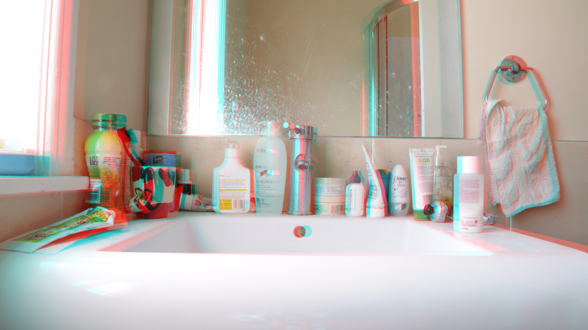

YuTingQiao
A professional photographer uses photography to earn money; amateur photographers
take photographs for pleasure and to record an event,emotion, place, or person.Yuting is an
amateur photographer.Her project is about recording, documenting the blivion from life
by use her camera to chasing the light.
She is studying in wellington now.